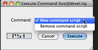

Artur Hefczyc <artur.hefczyc@tigase.net> v2.0, June 2014: Reformatted for AsciiDoc. :toc: :numbered: :website: http://tigase.net/ :Date: 2010-01-06 20:22
Creating a Tigase component is actually very simple and with broad API available you can create a powerful component with just a few lines of code. You can find detailed API description elsewhere. This series presents hands on lessons with code examples, teaching how to get desired results in the simplest possible code using existing Tigase API.
Even though all Tigase components are just implementations of ServerComponent interface I will keep such a low level information to necessary minimum. Creating a new component based on just interfaces, while very possible, is not very effective. This guide intends to teach you how to make use of all what is already there, ready to use with a minimal coding effort.
This is just the first lesson of the series where I cover basics of the component implementation.
Let’s get started and create the Tigase component:
import java.util.logging.Logger;
import tigase.server.AbstractMessageReceiver;
import tigase.server.Packet;
public class TestComponent extends AbstractMessageReceiver {
private static final Logger log = Logger.getLogger(TestComponent.class.getName());
@Override
public void processPacket(Packet packet) {
log.finest("My packet: " + packet.toString());
}
}The only element mandatory when you extend AbstractMessageReceiver is the implementation of void processPacket(Packet packet) method. This is actually logical as the main task for your component is processing packets. Class name for our new component is TestComponent and we have also initialised a separated logger for this class. This is actually very useful as it allows us to easily find log entries created by our class.
With these a few lines of code you have a fully functional Tigase component which can be loaded to the Tigase server, can receive and process packets, shows as an element on service discovery list (for administrators only), responds to administrator ad-hoc commands, supports scripting, generates statistics, can be deployed as an external component and a few other things.
Before we go any further with the implementation let’s set the component in the Tigase server so it is loaded next time the server starts. Assuming our init.properties file looks like this one:
config-type = --gen-config-def --debug = server --user-db = derby --admins = admin@devel.tigase.org --user-db-uri = jdbc:derby:/Tigase/tigasedb --virt-hosts = devel.tigase.org --comp-name-1 = muc --comp-class-1 = tigase.muc.MUCComponent --comp-name-2 = pubsub --comp-class-2 = tigase.pubsub.PubSubComponent
We can see that it already is configured to load two other components: MUC and PubSub. Let’s add third - our new component to the configuration file by appending two following lines in the properties file:
--comp-name-3 = test --comp-class-3 = TestComponent
Now we have to remove the etc/tigase.xml file and restart the server.
There are a few ways to check whether our component has been loaded to the server. Probably the easiest is to connect to the server from administrator account and look at the service discovery list.

If everything goes well you should see an entry on the list similar to highlighted on the screenshot. The component description is "Undefined description" which is a default description and we can change it later on, the component default JID is: test@devel.tigase.org, where devel.tigase.org is the server domain and test is the component name.
Another way to find out if the component has been loaded is by looking at log files. Actually getting yourself familiar with Tigase log files will be very useful thing if you plan on developing Tigase components. So let’s look at the log file logs/tigase.log.0, if the component has been loaded you should find following lines in the log:
MessageRouter.setProperties() FINER: Loading and registering message receiver: test MessageRouter.addRouter() INFO: Adding receiver: TestComponent MessageRouter.addComponent() INFO: Adding component: TestComponent MessageRouter.addComponent() FINER: Adding: test component to basic-conf registrator. Configurator.componentAdded() CONFIG: component: test
If your component did not load you should first check configuration files. Maybe you forgot to remove the tigase.xml file before restarting the server or alternatively the Tigase could not find your class at startup time. Make sure your class is in CLASSPATH or copy a JAR file with your class to Tigase libs/ directory.
Assuming everything went well and your component is loaded by the Tigase sever and it shows on the service discovery list as on the screenshot above you can double click on it to get a window with a list of ad-hoc commands - administrator scripts. A window on the screenshot shows only two basic commands for adding and removing script which is a good start.

Moreover, you can browse the server statistics in the service discovery window to find your new test component on the list. If you click on the component it shows you a window with component statistics, very basic packets counters.
iThu Jun 19 14:45:56 2014mage:images/service-disco-stats-200.png[]
As we can see with just a few lines of code our new component is quite mighty and can do a lot of things without much effort from the developer side.
Now, the time has come to the most important question. Can our new component do something useful, that is can it receive and process XMPP packets?
Let’s try it out. Using you favourite client send a message to JID: test@devel.tigase.org (assuming your server is configured for devel.tigase.org domain). You can either use kind of XML console in your client or just send a plain message to the component JID. According to our code in processPacket(…) method it should log our message. For this test I have sent a message with subject: "test message" and body: "this is a test". The log file should contain following entry:
TestComponent.processPacket() FINEST: My packet: to=null, from=null, data=<message from="admin@devel.tigase.org/devel" to="test@devel.tigase.org" id="abcaa" xmlns="jabber:client"> <subject>test message</subject> <body>this is a test</body> </message>, XMLNS=jabber:client, priority=NORMAL
If this is a case we can be sure that everything works as expected and all we now have to do is to fill the processPacket(…) method with some useful code.